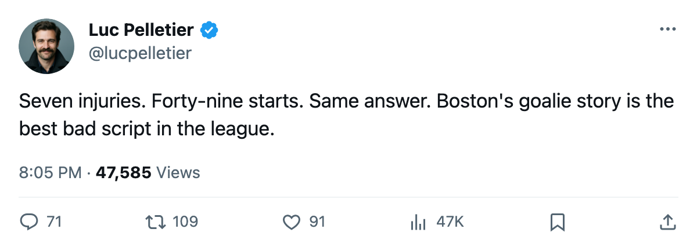

Goalie Watch: Raycroft is back as starter for the eighth time, and nobody wants to talk about it
Seven injuries, 49 starts, and Boston's coach put him right back between the pipes tonight.
 Luc PelletierMontreal correspondent · Home Ice Network
Luc PelletierMontreal correspondent · Home Ice Network
 Andrew Raycroft84 starts in goal for
Andrew Raycroft84 starts in goal for  Boston Bruins tomorrow against
Boston Bruins tomorrow against  New York Islanders. That is his first start since he went down with his seventh injury of the season, a window the league places between March 2 and March 4.
New York Islanders. That is his first start since he went down with his seventh injury of the season, a window the league places between March 2 and March 4.  Steve Shields83, who took the crease during that absence, moves to backup. Chris Mason70, who had been the G2, is benched entirely.
Steve Shields83, who took the crease during that absence, moves to backup. Chris Mason70, who had been the G2, is benched entirely.
Andrew Raycroft has played 49 of 65 games. A 75% share for a man who has hit the injured list seven separate occasions. The league does not record causes, so nobody outside that dressing room can tell you why the man keeps going down. He keeps coming back, and the coach keeps putting him in.
Steve Shields finished the last stretch as the starter, 18 games on the season at a 28% share. Chris Mason started 6 and is now the healthy scratch on the goaltending side.
Boston Bruins is 5th in the East at 78 points, riding a 4-game win streak that includes a 4-3 overtime win over  Vancouver Canucks on March 3. The playoff seat is locked up. The goaltending is what tonight turns on.
Vancouver Canucks on March 3. The playoff seat is locked up. The goaltending is what tonight turns on.
The next test is New York Islanders, and the record there is ugly. Boston is 0 and 2 with 1 overtime loss against New York this season. Three meetings, zero wins. The Islanders are 68 points in 8th place in the East, 10 points behind Boston, and they will come to Town Square Arena needing every one.
Raycroft's last injury spell ran fewer than four days. He is 28. His backup has won 28% of the team's games and is now the backup again. The coach went with Raycroft at morning skate: 49 starts in 65 games, seven times on the injured list, same result every time. Raycroft starts.
